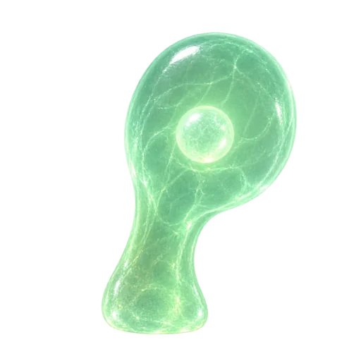
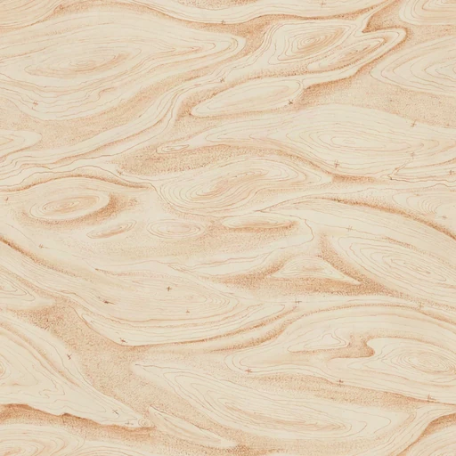

Ephyra turns production problems into quests: investigate, repair, prove, and keep watch.
Self-hostable by design. Pre-alpha, built in the open.
A little life around the work.
For people who build and care for software.ephyra.quest
Every fix has a memory.
A quest keeps the cause, the attempts, the proof, and the outcome together in git.

Rho · Listener
Start with something observed.
An error, regression, or failed intent probe gives the investigation a concrete starting point.
What stays in the recordThe original signal, source, and triage decision.
Explore each stage. This describes the intended loop; deployment authority and verified evidence determine how far a quest can proceed.
Autonomy has a boundary.
The default direction is self-driving. Your policy defines when Ephyra acts and when it needs you.
Progress within the agreed policy.
Models evaluate recorded checkpoints. Ephyra asks a specific question when missing information or authority blocks progress.
Illustrative policy boundary
Investigate a checkout error. Prove the proposed change. Require the configured authority before landing.
Evidence before approval
Decisions bind to the revision and proof being reviewed.
Visible reasons to stop
Missing tools, exhausted budgets, and uncertain writes remain explicit.
A bounded request for help
An answer can inform an investigation. It cannot grant new permissions.
One view of the work.
Follow quests, understand what agents are doing, and find the decisions that need attention.
Actual app · fictional sample data
Overview brings recorded activity, waiting decisions, and spend into the same workspace. Unknown costs remain unknown.
Your first few minutes.
A personal entrance, a repository, and a clear view of what Ephyra can prepare.
Sign in with Not Organic.
An Ephyra entrance connects your account without copying tokens.
Choose your repository.
Find a public GitHub repository or provide a supported repository link. Private access uses credentials.
Choose how it should work.
Self-driving is the starting point. Supervised review is available.
Inspect preparation and blockers.
Setup prepares policy and verification documents, then records what the environment can actually run.
Actual sign-in entrance
Open the work behind the agent.
Read the transcript, inspect tool calls, see saved visuals, and follow a recorded session link.
Recognizable marks. Exact runner details on hover, focus, or tap in the app.
Actual app · fictional sample data
Join the context. Open an Amp orb or session when the run supplies a link.
See what it made. Agent HTML visuals stay beside the transcript and replay after the run.
Follow together. Choose who decides.
The inviter chooses Viewer or Approver before sharing a single-use link or QR code.
See the same work.
Read quests, follow runs, inspect evidence, and see recorded costs.
The teammate sees the workspace and role before joining.
Unused invitations expire after seven days.
The owner can revoke access.
Approvers can comment and claim a review. A review claim does not take control of a running agent.
Actual app · fictional sample data
The owner shares the link or QR. Ephyra does not send an invitation email.
Tell Ephyra what good means.
Keep product intent, autonomy, and the knowledge agents may use in view.
Actual app · fictional sample data
Draft intent or policy in writing or conversation. Review the changes before publishing. A published policy ref does not itself change the live policy.
A crew with a little character.
Six roles, distinct materials, and small gestures that make the workspace feel alive.

Bell · Researcher
Gather the evidence.
Bring traces, code, and previous work into an investigation.
One short gesture. Silent. No loop.
Hear a small interaction
Artwork and gestures are decorative. App sound is off by default; reduced motion keeps stills. Explore the motion studies ↗
The record belongs with your code.
Portable evidence and replaceable execution are part of the product’s foundation.
Authority
Your account and workspace
Not Organic account access, explicit membership, and scoped connections.
Record
Quests, revisions, and proof in git
A durable account of the work, with account settings and workflow queues in Convex.
Execution
Isolated runners and forge adapters
Execution can be replaced without replacing the account or the quest’s history.
Git at the centerPlain gitRadicleTangledSelf-hostable direction
Adapter code and offline checks exist. Live provider access, remote landing, and rollback still need deployment-specific verification.
The next milestone is a real repair.
The application is here. The full autonomous outcome still has to earn its evidence.
Implemented
Console, setup, policy drafts, team roles, run transcripts, saved visuals, voice interfaces, and execution adapters.
Demonstrated
Actual UI with fictional fixtures. Local account, membership, and workflow tests. Public site and app delivery.
Still to prove
A production error becoming a proved, landed, watched repair through the configured live services.
Evidence should be inspectable.
This is a recorded example, not a completed production repair.
Bring your application. Build the loop with us.
Start with a repository you understand. Help make the evidence, the boundaries, and the everyday experience better.